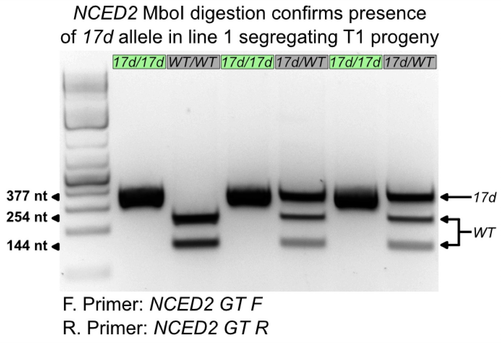
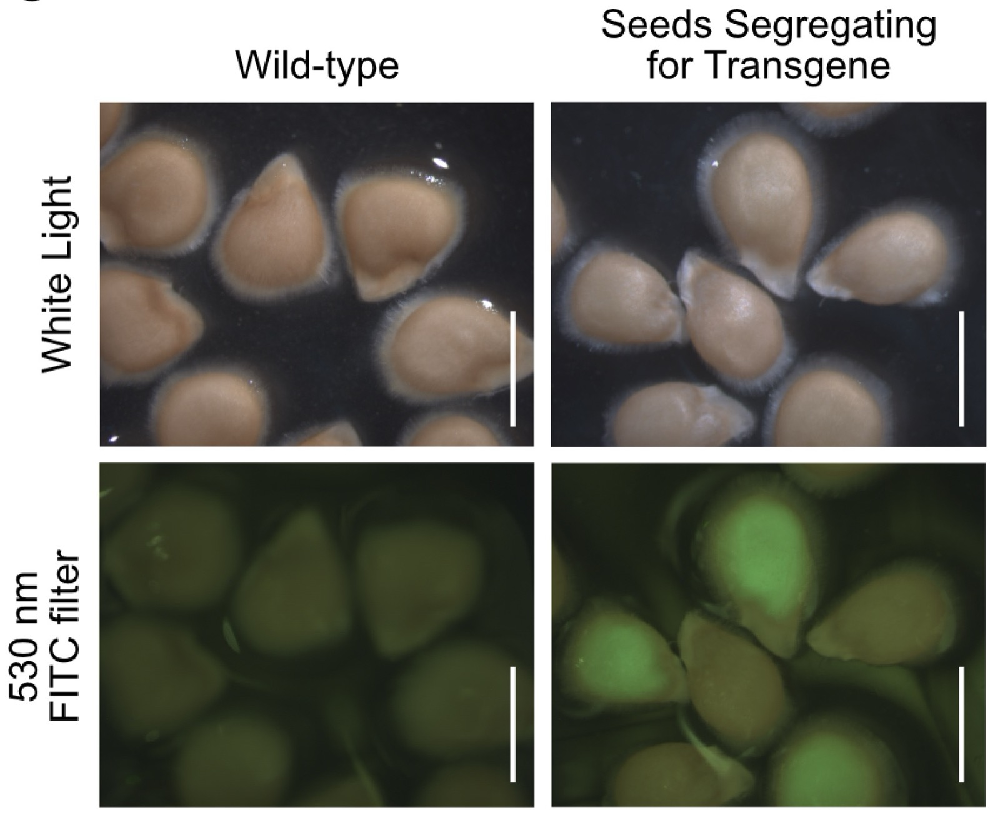
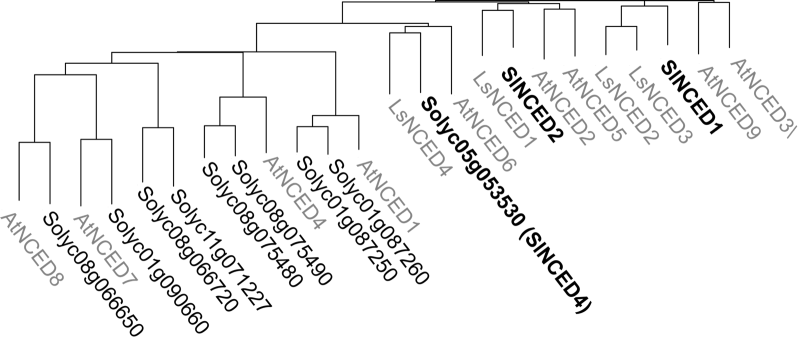
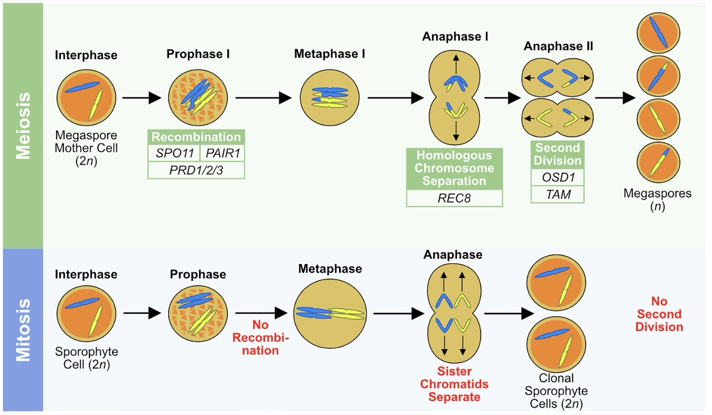
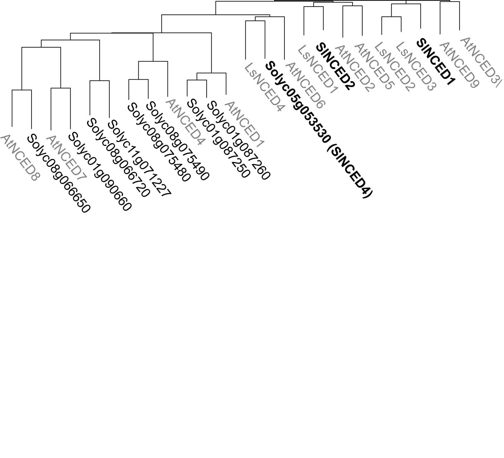
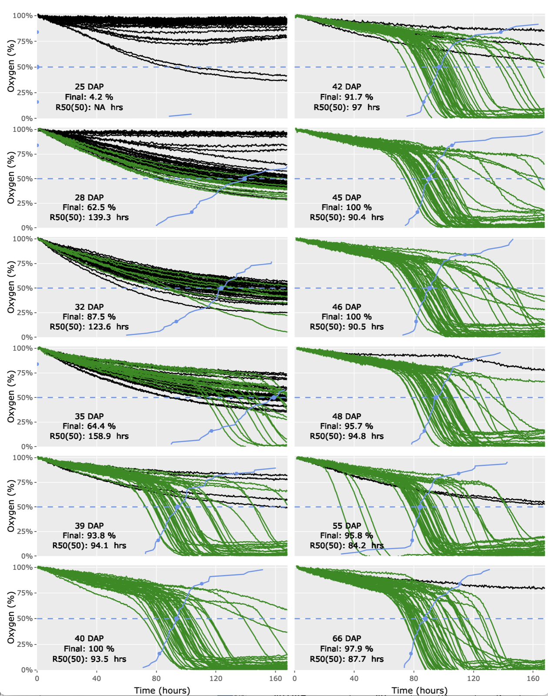
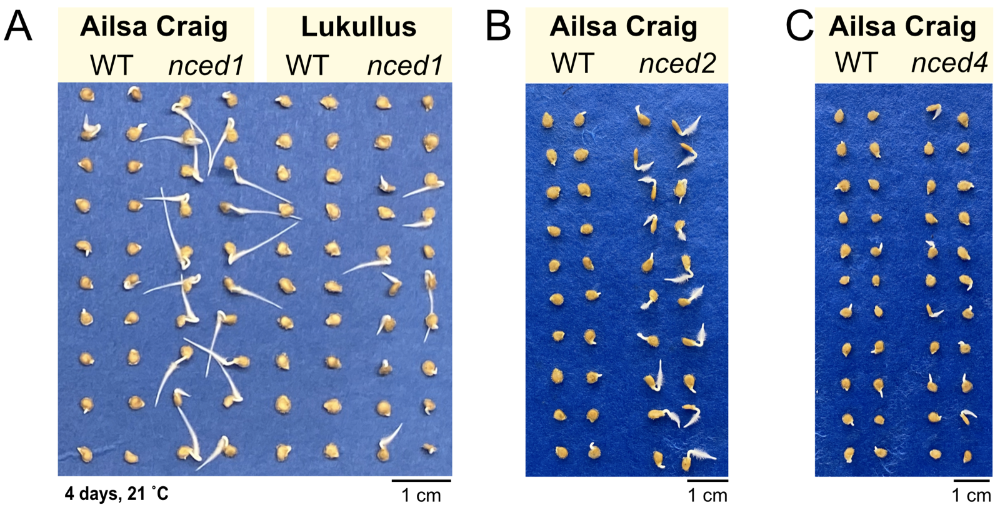

Representative projects spanning wet-lab biology, phenotype screening, and computational analysis.
High-throughput phenotyping overview used to compare seed performance across genotypes and conditions.

NCED-targeted seed trait program (PhD)
Developed CRISPR workflows targeting NCED family candidates in tomato to test links between ABA-related pathways,
dormancy, and germination performance.
Methods: vector design, transformation screening, genotyping, and comparative germination assays.

Stress resilience germination assays
Designed and executed phenotype pipelines to compare wild-type and mutant lines under high-temperature and osmotic stress.
Methods: controlled-condition assays, germination tracking, and statistical comparisons in R/Python.

RNA-seq and developmental transition analysis
Processed large RNA-seq datasets on HPC infrastructure to identify differential expression patterns across developmental stages.
Methods: QC, PCA, differential expression workflows, and reproducible reporting.
TODO: Add links to public code, preprints, or data where shareable.
Research figure highlights

Teaching-style schematic used for communicating developmental genetics concepts.

Colloquium slide adapted as a visual summary of multivariate trait interpretation.

Seminar panel highlighting treatment-level contrasts in germination behavior.

Workflow-oriented figure connecting assay design to observed performance metrics.